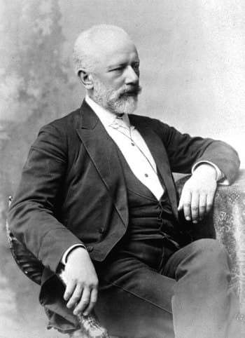

Johann Sebastian BachJohann Sebastian Bach Considerado um dos mais importantes artistas da história da música, (1685-1750) foi um músico, compositor e organista alemão. Bach faz parte da tríade dos maiores músicos eruditos ao lado de Beethoven e Mozart. Johann Sebastian Bach nasceu em Eisenach, Alemanha, no dia 21 de março de 1685. Filho de um professor de violino e viola, enquanto frequentava a escola, Johann Sebastian tinha lições dos instrumentos com o pai, além de classes de teoria musical. Luterano de formação, Johann Sebastian ficou órfão de mãe aos nove anos e de pai aos dez. Sem outra alternativa, foi morar com o irmão mais velho, Johann Christoph, organista da Igreja de São Miguel, em Ohrdruf. Com o auxílio do irmão, aprendeu a tocar cravo e órgão. |
|
Wolfgang Amadeus MozartWolfgang Amadeus Mozart, (1756-1791) foi um músico e compositor austríaco, considerado um dos maiores nomes da música erudita e um dos compositores mais importantes da história da música clássica. Wolfgang Amadeus Mozart nasceu em Salzburg, na Áustria, no dia 27 de janeiro de 1756. Filho de Leopold Mozart, músico da corte, e de Anna Maria Pertl, filha do administrador do castelo de Saint Gilgen, desde pequeno já demonstrava genialidade para a música . Com quatro anos, Mozart já assimilava como lições de cravo que a irmã Marianne começava a receber. Diante disso, seu pai passou a usar música ao filho, que aprendia com incrível facilidade. Com tão pouca idade, já começou a anotar suas ideias melódicas. Com cinco anos, Mozart escreveu um concerto para cravo, “Minueto e Trio em Sol Maior”, hoje catalogado no Índice Koechel como o n.º 1. |
|
Frédéric François ChopinFrédéric François Chopin, (1810-1849) foi um músico polonês, radicado na França, considerado um dos mais importantes compositores para piano, admirado no mundo inteiro. Frédéric François Chopin (Frederyk Franciszek Chopin, em polonês) nasceu em Zelazowa Wola, na Polônia, provavelmente no dia 22 de fevereiro de 1810. Foi apelidado pela família de “Fricek.” Seu pai, Nicolas Chopin, neto de imigrantes franceses, era capitão do exército rebelde e professor de francês. Sua mãe, uma pianista polonesa Tekla Justina, era de origem aristocrática.Ainda criança, Chopin estudava piano com sua irmã mais velha, Ludwika. Em 1816, começou a estudar com o professor Adalbert Zywny. Em 1817, com sete anos, Chopin viu sua primeira obra a “Polonaise em Sol Menor” ser publicada em uma revista. Em 1818, fez sua primeira apresentação em um recital realizado no Palácio Radziwill, quando executou o Concerto em Mi Bemol, de Adalbert Gyrowetz. |
|
Ludwig van BeethovenLudwig van Beethoven (1770-1827) foi um compositor, regente e pianista alemão. A Nona Sinfonia, conhecida também como Sinfonia Coral, por incluir coro em seu quarto movimento, foi a obra que o consagrou em todo o mundo. Quando estava com 27 anos, Beethoven começou a desenvolver os primeiros sintomas de surdez e aos 48 já estava inteiramente surdo. Nasceu em Bonn, Alemanha, no dia 17 de dezembro de 1770. Neto e filhos de músicos, começou a estudar cravo e violino com apenas cinco anos de idade. Aos sete anos começou a frequentar uma escola pública, era tristonho e rebelde devido ao alcoolismo a que seu pai se entregou. Com oito anos participando de um recital na Academia de Sternengass e foi apresentado pelo pai como um gênio. A partir de 1781 passou a ter aulas com Christian Gottlied Neefe, organista-mor da corte que lhe mostrou novos horizontes tocando a música de compositores famosos como Haydn e Mozart. Nessa época começou a aprender piano, instrumento no qual se destacaria mais tarde. Com apenas onze anos, foi nomeado organista-suplente da corte. Ao mesmo tempo se aperfeiçoava no violino com o mestre Rovantini. |
|
|  | Piotr Ilitch TchaikovskiPiotr Ilitch Tchaikovski (1840-1893) foi um músico russo. "O Lago dos Cisnes", seu primeiro balé, estreou no teatro Bolshoi em Moscou. Deixou obras que primam pela riqueza melódica e pela orquestração. É o mestre dos compositores para o balé clássico. "A Bela Adormecida", o "Quebra Nozes" e a "Quarta Sinfonia" são algumas de suas composições. Piotr Ilitch Tchaikovsky nasceu em Votkinsk, na Rússia, no dia 7 de maio de 1840. Filho de Ilia Petrovitch, engenheiro, cuja família havia ocupado cargos no exército e na administração russa, e de Alexandra Andreievna d'Assier, de origem francesa. Com cinco anos Tchaikovsky já dedilhava o piano e aos sete já compunha. Em 1850, a família vai morar em São Petersburgo onde o jovem se encanta com o teatro e os concertos. Sonho de Tchaikovsky era ser compositor. Compunha peças curtas com a mesma espontaneidade com que tocava piano. Entrava em contato com as escolas musicais de Berlim e Viena. Em 1865 compôs sua primeira sinfonia "Sonhos de Inverno" e também a abertura sinfônica "A Tempestade". Em 1866 concluiu seus estudos no conservatório. Nesse mesmo ano, foi nomeado professor de Harmonia e Composição no Conservatório Musical de Moscou. |